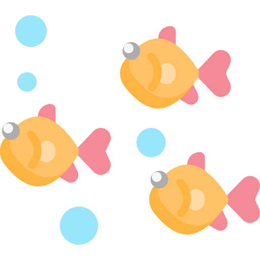
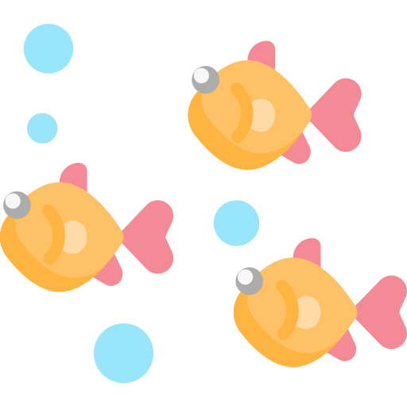
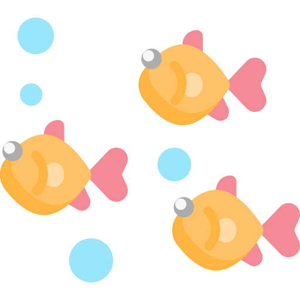
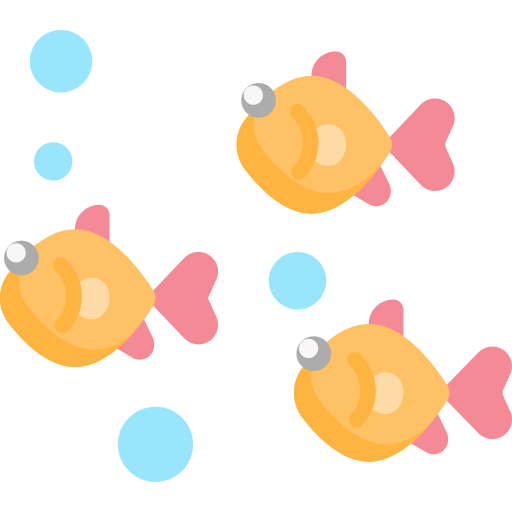

Projektbeschreibung

 

 

Das Projekt: Bei unserem Projekt handelt es sich um eine Kurznachrichtensendung. Anstatt darin bekannte Probleme aus unserer menschlichen Welt zu thematisieren, wollen wir auf den Klimawandel und seine Auswirkungen im Meer aufmerksam machen. In kleinen Ausschnitten werden Themen wie Sauerstoffarmut, Verlassen des Lebensraums oder Massensterben angesprochen – und das aus der Sicht von uns Menschen. Mit einer realistischen Darstellung wollen wir die Perspektive wechseln und damit Probleme aus dem Meer auf unsere Leben übertragen. Dafür haben wir uns verschiedene Tiere ausgesucht, die die zahlreichen Probleme verkörpern sollen. So zum Beispiel Kabeljau, Mönchsrobbe, Krabbe oder Grindwal.
Problembeschreibung: Der Klimawandel macht auch vor unseren Meeren nicht halt. Einige der Wirkungen sind bereits heute zu beobachten – wie der Anstieg des Meeresspiegels, die Erwärmung des Oberflächenwassers und die Versauerung des Meerwassers. Laut Weltklimarat haben die Ozeane seit 1970 mehr als 90 Prozent der zusätzlichen (menschengemachten) Wärme aus der Erdatmosphäre aufgenommen und sich dadurch kontinuierlich erwärmt. So führt zum Beispiel die Erwärmung des Nordostatlantiks dazu, dass der Kabeljau langsamer wächst und immer weniger Nachkommen die ohnehin stark ausgebeuteten Bestände auffrischen. Ganze Fischbestände „wandern“ mit dem kalten Wasser mit und breiten sich auf der Nordhalbkugel aus. Auch Wale und Delfine leiden unter der Klimakrise im Meer – durch höhere Wassertemperaturen verschieben sich Fressgebiete außerhalb von bereits existierenden Schutzgebieten, sodass sie erneut in stark vom Menschen genutzten Meeresbereichen ohne Schutz dar stehen und Schiffskollisionen, Beifang in Fischernetzen und starker Lärmverschmutzung ausgesetzt sind. (https://www.wwf.de/themen-projekte/meere-kuesten/klima-und-meer/) Von Krabben die aufgrund des Sauerstoffmangels vom Meer an Land fliehen gar nicht erst zu sprechen.
Fragestellung: Die Fragen, die wir uns gestellt haben ist: Wie würde unser eigenes, menschliches Leben aussehen, wenn wir selbst mit den klimabedingten Problemen der Weltmeere klarkommen müssten? Wie würden wir mit den Problemen umgehen und was würde sich an unserem bekannten Leben ändern?
Ziel: Unser Ziel ist es die Menschen aufzurütteln und dafür aufzurufen etwas zu verändern. Durch den Perspektivenwechsel soll klar werden, wie tragisch das Leben der Meerestiere ist und auch in Zukunft noch sein wird, wenn wir so weitermachen wie bisher. Der Zuschauer soll sich in die Lage der Lebewesen hineinversetzen und merken, dass deren Situation nicht toleriert werden kann. Tiere haben nicht die Möglichkeit etwas zu tun um sich zu helfen – wir schon!